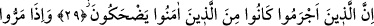
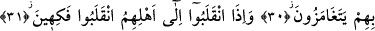
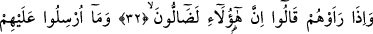
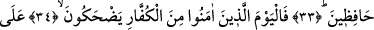
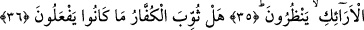
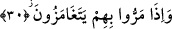

KÂFİRLER YAPTIKLARININ
CEZASINI BULDULAR MI!
29. Şüphesiz günahkârlar, (dünyada) îman edenlere gülerlerdi.
30. Onlarla karşılaştıklarında kaş göz hareketiyle alay ederlerdi.
31. Âilelerine döndüklerinde, (alaylarından dolayı) keyiflenerek dönerlerdi.
32. Müminleri gördüklerinde: «Şüphesiz bunlar sapıtmış» derlerdi.
33. Halbuki onlar, müminleri denetleyici olarak gönderilmediler.
34. İşte o gün (âhirette) de îman edenler kâfirlere gülerler.
35. Koltuklar üzerinde etrafa bakarlar.
36. Kâfirler yaptıklarının cezâsını buldular mı! (Elbette buldular.)
“Doğrusu günahkarlar” yâni cürüm ve günah sâhibi olanlar... Aslında küfürden ve
mü’min oldukları için îman edenlere eziyet etmekten daha büyük bir günah yoktur.
Âyette sözü edilen bu kişilerden maksad, Ebû Cehil, Velid b. Muğire, As b. Vail vb.
gibi Kureyş liderleri, müşriklerin günahkar ileri gelenleri ve büyükleri idi.
Bunlar dünyada iken sadık bir îmanla “îman edenlere gülerlerdi.” Yani Ammar,
Suheyb, Bilal, Habbab ve başkaları gibi müminlerin fakirleriyle alay ederlerdi.
Âyette harf-i cerr ile başında bulunduğu kelimenin önce gelmesi; fiilin ise daha sonra
getirilmesi, âyet sonlarındaki ses uyumunu sağlamak içindir.
30. Onlarla karşılaştıklarında kaş göz hareketiyle alay ederlerdi.
Müminlerin fakirleri “onlarla” yâni müşriklerle meclislerinde “karşılaştıklarında
kaş-göz hareketiyle alay ederlerdi.” Bu âyeti, yukarda yaptığımız tefsirin aksine
müşriklerin müminlerle karşılaşmaları şeklinde anlamak da mümkün ise de ağırlıklı